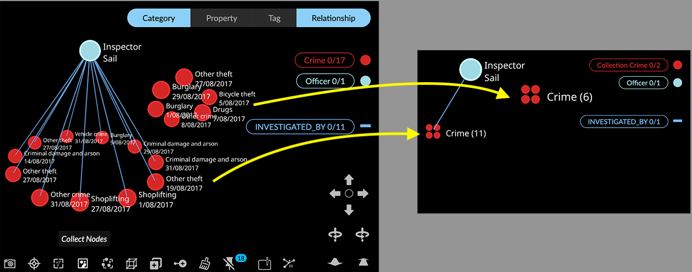
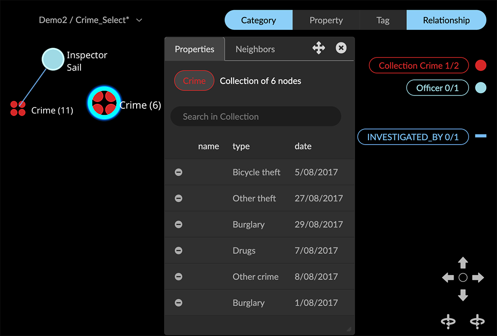
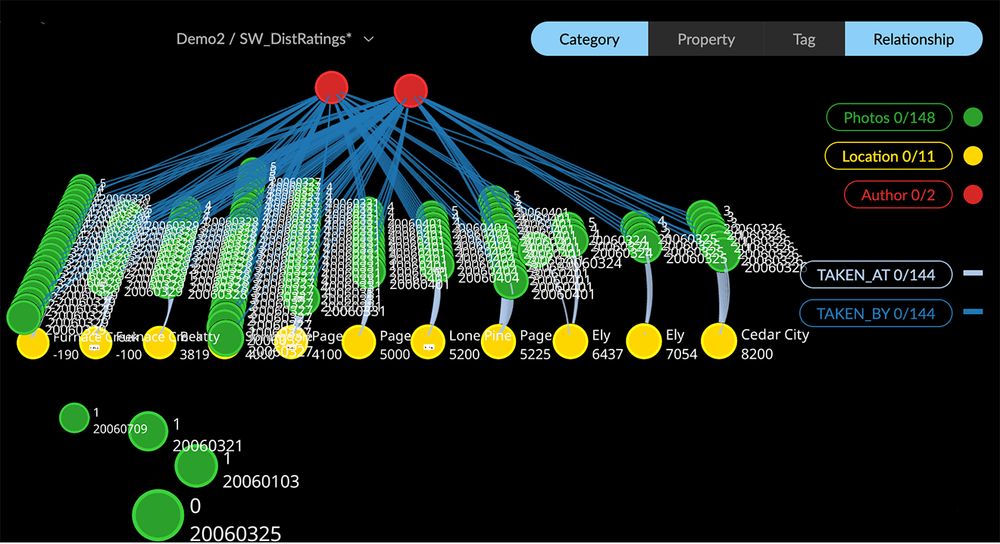
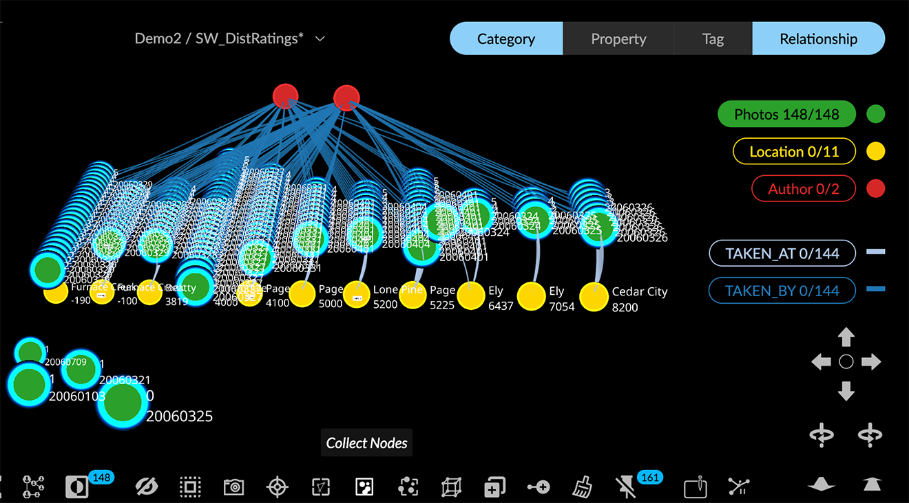
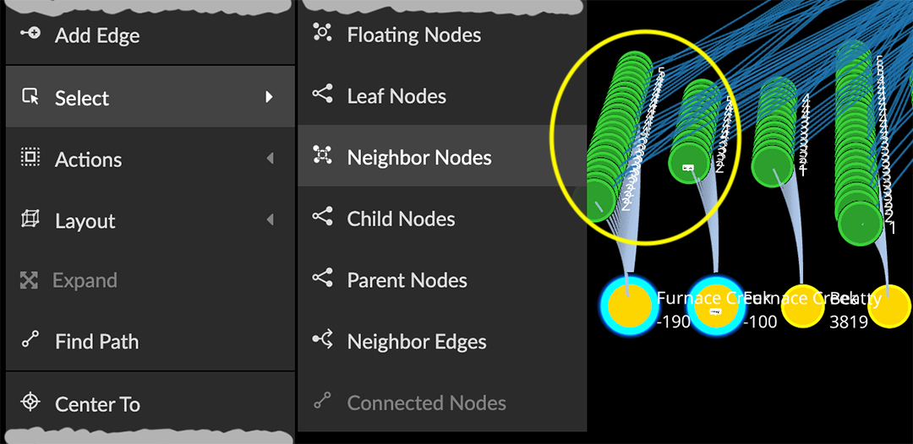
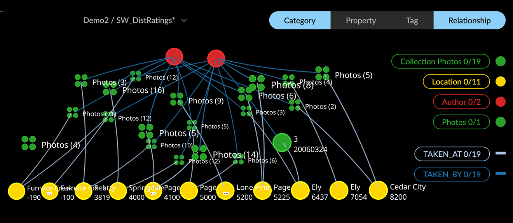
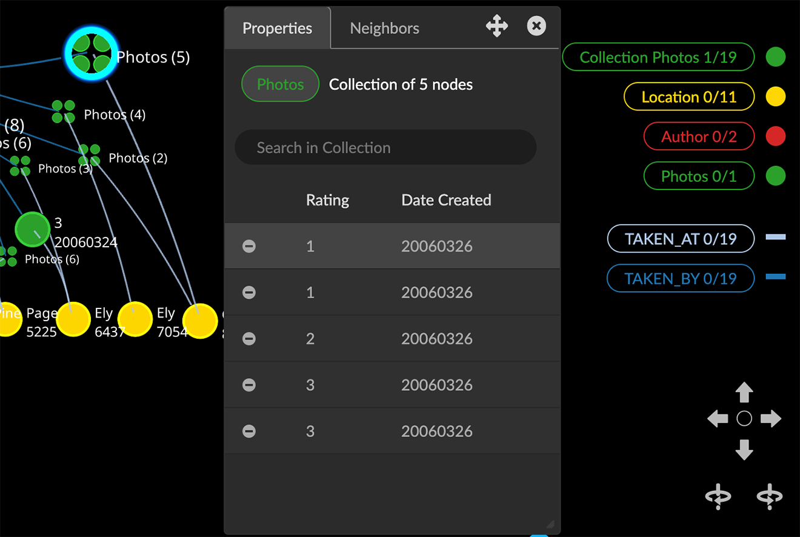
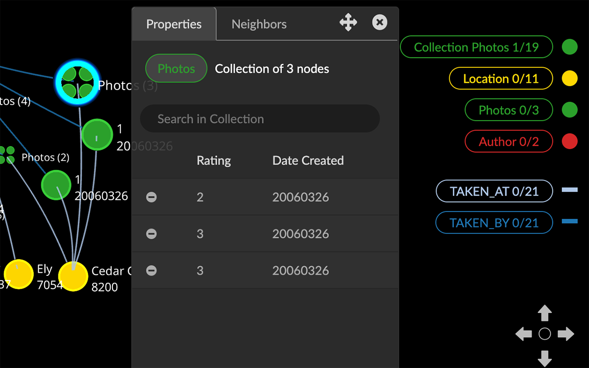
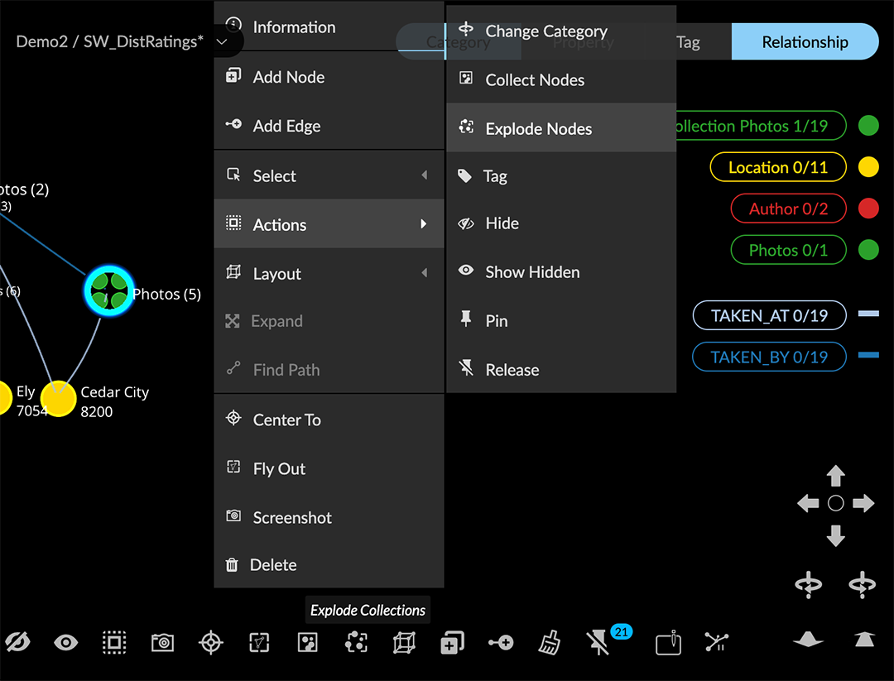
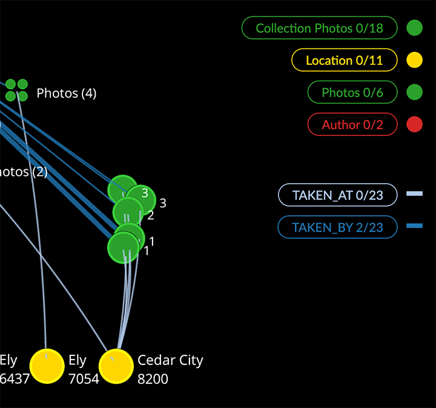

Using Collection Nodes GraphXR’s Collect Nodes / Explode Collections let you create and work with groups of nodes of a given category which are either unconnected (floating nodes) or connected to another node through a single relationship. Collections help you simplify a graph quickly and work with subsets of similar, related data. Collected nodes are gathered into special collection nodes indicated by four circles displayed inside a node.  A collection node is automatically given a temporary category label of the form Collection Category label. This label immediately appears in the Category legend when you collect nodes. In the legend, the number of collection nodes of each type is listed, along with the number currently selected. The following properties are created: collection. A boolean set to true. count. The number of nodes currently in the collection. label. The label on the collection node, formed by combining the count and of property values (e.g. Photos(6)). of. The category label of the nodes in the collection (e.g. Crimes). The edges of the nodes in the collection (if any) are temporarily collapsed into a single collection edge. The relationship name remains the same, but the direction is reversed. The count of edges in the legend does not distinguish between an edge that connects to a collection and one that connects to a single node. However, in a Table of the edges of that relationship, a collection’s Source identifier is the label property value for the collection node, rather than an identifier of a single edge. The information window for a collection node shows the category and number of nodes in the collection, and displays a list of the collected nodes. Properties set as captions in the original collected category appear as headings in the information window. You can edit these at any time. In the Projects>Category tab, click the category, then select the Caption checkbox for each property in the order you want them to appear. To remove a node from the collection, click its minus icon.  Creating collections A collection is created from nodes which are all connected by the same relationship. If a node has connected edges of more than one relationship it can still be included in a collection. For an example, we’ll collect Photo nodes connected to Location nodes through TAKEN_AT edges. The graph also includes Author nodes connected to the Photo nodes through different TAKEN_BY edges, as well as a few floating nodes (with no connections).  To create collections: Select Photo nodes using the Category list in the legend.  You can select specific nodes using any method. For example, to collect only the Photo nodes connected to specific Locations, select the Location nodes, right-click and choose Select > Neighbor Nodes. Also note that if nothing is selected, any valid collections in the entire graph are created automatically.  Click Collect Nodes on the toolbar, or right-click and choose Actions > Collect Nodes. Nodes of a single category connected by zero or one edge to another node are collected into separate collection nodes and disappear from the graph. The new collection category (Collection Photos) appears in the Category legend.  Editing collections To inspect and edit a collection: Double click to select a collection node and open its information window. A list of the nodes in the collection is displayed.  You can now: Click the minus (- ) icon in the information panel to remove a node from a collection. The removed node and its edge appears outside the collection.  You can select removed nodes and click Collect Nodes again to add them back to the collection. Select additional nodes (for example, after pulling new data into the graph), and click Collect Nodes to add eligible nodes to your collections. Open the Table panel to review a table of collection nodes and their properties, enter a search, or click on a table row to center the graph on the node. Deleting (exploding) collections To explode a collection: Select one or more collection nodes using any method, or deselect all data to explode all collections.  Click Explode Collections on the toolbar, or right-click and choose Actions > Explode Nodes. All nodes in the selected collections are returned to the graph and those collection nodes are deleted. A collection category is removed when all its collection nodes have been exploded. 